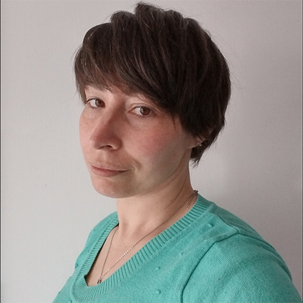

JESICA GUTIÉRREZ
Frontend Developer | UX/UI Design | Accessibility
Product Thinking | Technical SEO | WordPress

PERFIL PROFESIONAL
Mi recorrido profesional comenzó en el diseño en comunicación visual y evolucionó hacia el diseño UX/UI y el desarrollo frontend. Ese camino me permitió desarrollar una mirada integral sobre los productos digitales, comprendiendo cómo las decisiones de diseño, experiencia de usuario, accesibilidad, SEO y desarrollo se complementan para construir mejores soluciones.
Disfruto de colaborar con equipos multidisciplinarios para entender los problemas desde diferentes perspectivas y aportar principalmente en la implementación frontend, contribuyendo a crear productos funcionales, accesibles y alineados con las necesidades de las personas y los objetivos del negocio.
La Plata, Buenos Aires, Argentina
EXPERIENCIA PROFESIONAL
Luz Consulting
Frontend Developer | 2024-2026
Desarrollo de sitios web con HTML, CSS, JavaScript y WordPress.
Colaboración en decisiones de UX/UI junto a equipos multidisciplinarios.
Fundación Comparlante
Frontend Developer (Voluntariado) | 2023-2024
Desarrollo de sitio institucional con foco en accesibilidad digital y WCAG.
Adaptación de propuestas visuales para mejorar jerarquía, estructura y navegación.
Logros clave
Implementé buenas prácticas de HTML semántico y accesibilidad.
Participé en un modelo de negocio de suscripción para servicios web.
Trabajé con equipos de diseño, producto y desarrollo para soluciones inclusivas.